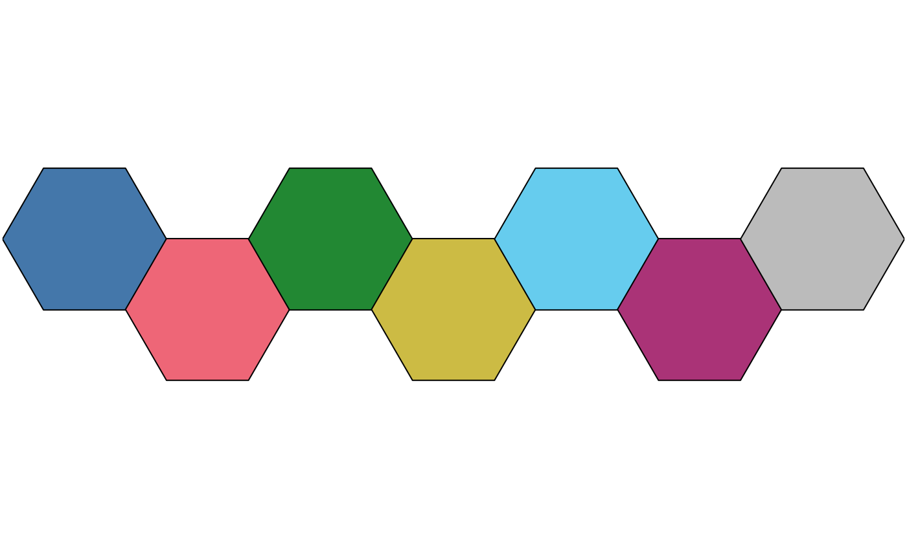
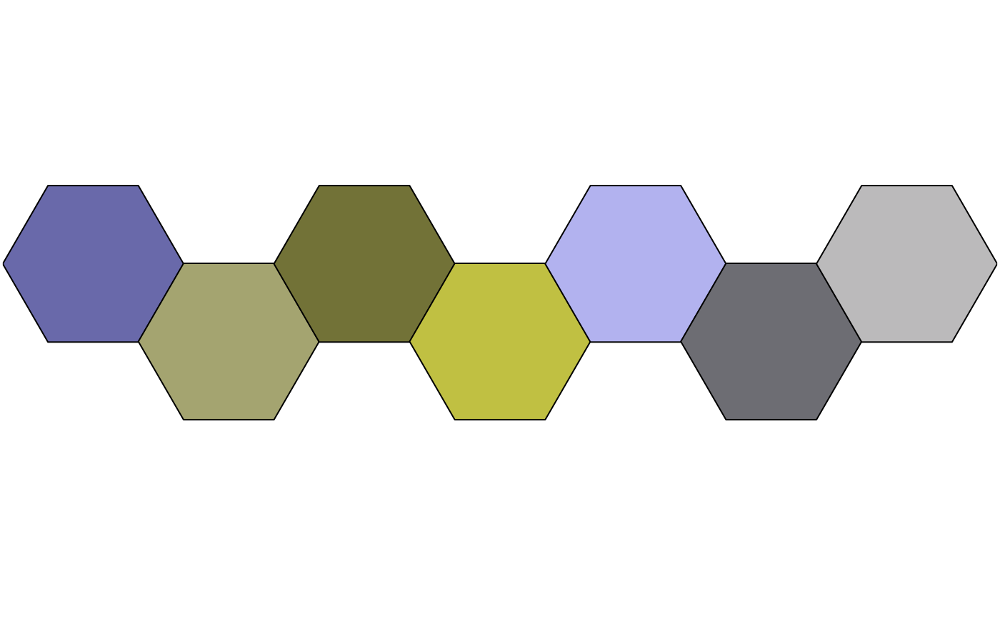
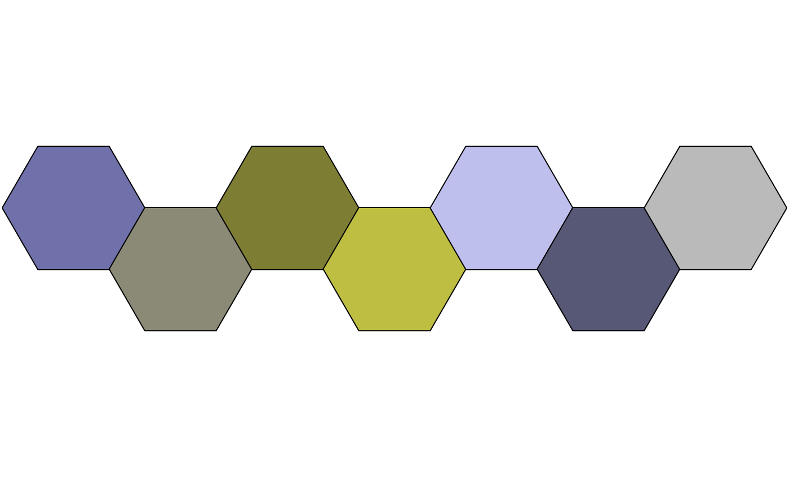
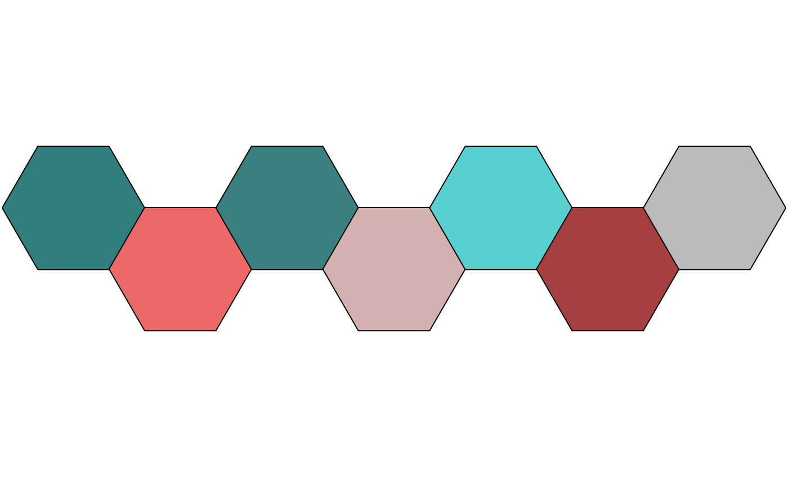
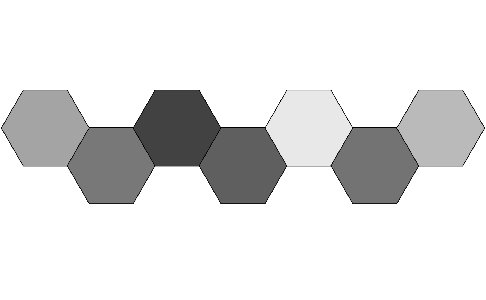

Simulate Colour-Blindness
Arguments
- x
A palette
functionthat when called with a single integer argument (the number of levels) returns a vector of colors (seecolour()).- mode
A
characterstring giving the colorblind vision to be used. It must be one of "deuteranopia", "protanopia", "tritanopia" or "achromatopsia". Any unambiguous substring can be given.
Value
A palette function that returns a vector of anomalized
colours. All the attributes of the initial palette function are inherited,
with a supplementary attribute "mode" giving the corresponding
colour-blind vision.
References
Brettel, H., Viénot, F. and Mollon, J. D. (1997). Computerized Simulation of Color Appearance for Dichromats. Journal of the Optical Society of America A, 14(10), p. 2647-2655. doi:10.1364/JOSAA.14.002647 .
Tol, P. (2018). Colour Schemes. SRON. Technical Note No. SRON/EPS/TN/09-002, issue 3.1. URL: https://personal.sron.nl/~pault/data/colourschemes.pdf
Viénot, F., Brettel, H. and Mollon, J. D. (1999). Digital Video Colourmaps for Checking the Legibility of Displays by Dichromats. Color Research & Application, 24(4), p. 243-52. doi:10.1002/(SICI)1520-6378(199908)24:4<243::AID-COL5>3.0.CO;2-3 .
Examples
# Trichromat
pal <- colour("bright")
plot_scheme(pal(7))

# Deuteranopia
deu <- convert(pal, mode = "deuteranopia")
plot_scheme(deu(7))

# Protanopia
pro <- convert(pal, mode = "protanopia")
plot_scheme(pro(7))

# Tritanopia
tri <- convert(pal, mode = "tritanopia")
plot_scheme(tri(7))

# Achromatopsia
ach <- convert(pal, mode = "achromatopsia")
plot_scheme(ach(7))
